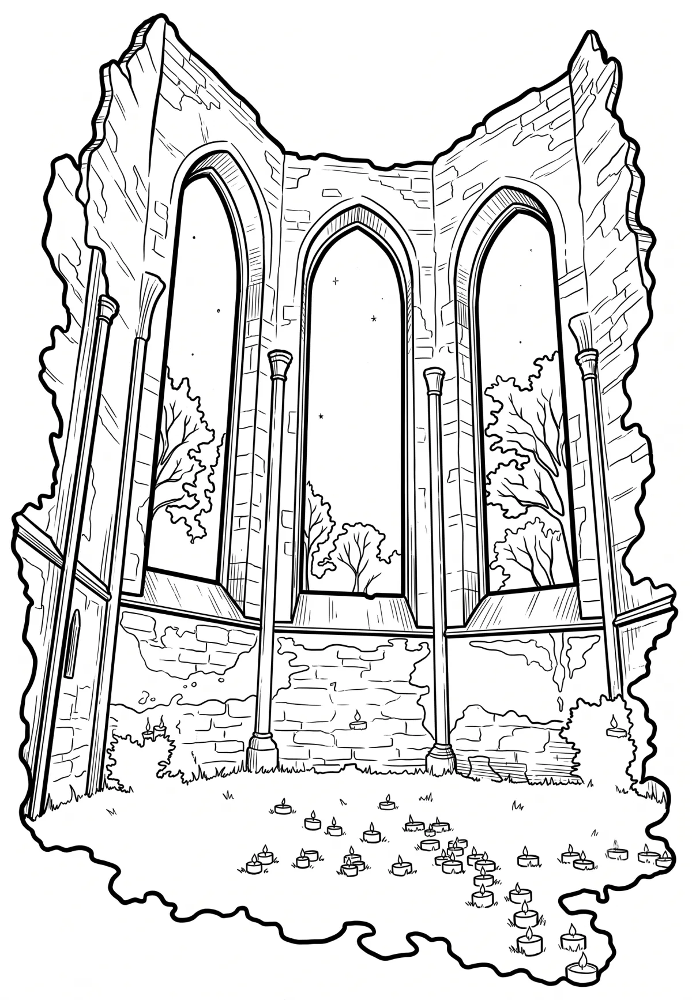

Klášter Rosa Coeli
Zřícenina kláštera premonstrátek Rosa coeli (latinsky Růže nebes; čte se: [róza célí]) se nachází na východním okraji města Dolní Kounice v okrese Brno-venkov. Jeho areál se zříceninou klášterního kostela a s barokní rezidencí je chráněn jako kulturní památka.
Více na Wikipedii